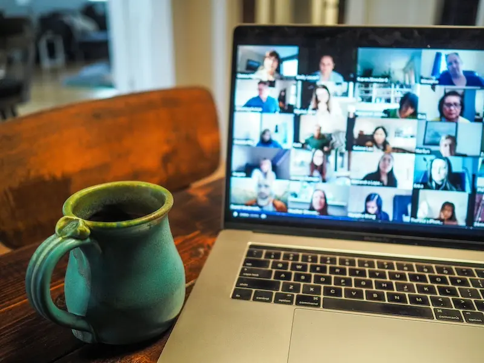

The problem with your virtual meetings isn't the platform
You upgraded to a better video tool. You bought a Miro licence. The meetings still drain energy and produce nothing that couldn't have been an email. The problem was never the platform. It was the format — running an in-person agenda on a remote connection and expecting the same results.
Virtual facilitation designed for the medium produces real decisions, real alignment, and real participation. Not a pale imitation of a room.

What makes virtual facilitation different
In a physical room, energy is tangible. You can see when the group drifts, feel when a breakout needs more time, read the body language of the person who hasn't spoken yet. Online, all of that disappears. Virtual facilitation compensates by designing more deliberately for what the medium takes away.
What we design differently online
- Shorter segments — attention drops faster on screen; we build in transitions every 20–25 minutes
- Structured breakouts — small-group work with a clear task and a clear output, not "discuss for 10 minutes"
- Visible shared thinking — a live Miro or Mural board everyone edits, not slides only the facilitator controls
- Camera discipline — not mandatory, but we set expectations that make participation the default
- Decision capture in real time — agreements written in shared view before the session closes, not reconstructed afterwards
When virtual facilitation is not the right call
- When the group has never met in person and trust-building is the primary goal — a physical room does this better
- When the challenge involves LEGO® Serious Play® or other hands-on methods that depend on physical materials
- When the session involves more than 60 people — large-group dynamics online become hard to manage without significant extra infrastructure
- When the organisation's culture strongly resists cameras on — full participation requires people to be present, not silently multitasking
We'll tell you if in-person would serve you better. We'd rather say that than deliver a session that doesn't work.
How we run virtual sessions
We work on Zoom, Microsoft Teams, Google Meet, and Webex. For collaborative canvases we use Miro or Mural — whichever your team already has access to. We don't ask you to adopt new tools; we design within what you use.
Before the session
- We interview key stakeholders to understand the real challenge beneath the stated one
- We design the session — every segment, every breakout question, every decision point
- We set up the digital workspace before participants arrive, so no time is lost on setup
- We send participants a one-page brief so they arrive knowing what to expect and what to bring
During the session
- We open with a structured check-in that activates participation in the first five minutes
- We run breakouts with tight tasks and visible timers — no ambiguity about what to produce
- We harvest outputs into a shared space in real time so nothing is lost between breakout and plenary
- We close with explicit agreements: who does what, by when, visible to everyone
After the session
- We send a session summary within 24 hours — decisions made, actions agreed, open questions flagged
- We debrief with you on what the group's energy told us that the content didn't
We facilitate in English, Dutch, and French. For European teams spread across countries, this means people can work in the language they think best in.
Virtual facilitation in practice
Pan-European team: quarterly planning that actually worked
A team of 24 people across six countries had given up on remote planning sessions. Previous attempts ran long, generated lists that nobody owned, and ended with everyone logging off before the wrap-up.
We redesigned the session from the ground up: a shared Miro board pre-loaded with the team's open items, structured breakouts with a 15-minute hard limit, and a final segment dedicated to explicit owner assignment. The session ran 15 minutes under schedule. Every action had a name next to it before people left the call.
Distributed leadership team: strategy alignment across time zones
Eight leaders, three time zones, one strategic question that had been circling for months. A two-hour virtual session using 1-2-4-All and a shared canvas produced the alignment that six months of email threads had not. The decision they reached was not the one anyone had predicted going in — which is exactly the point of a well-designed session.
Design your next virtual session properly
Tell us what the session needs to produce. We'll tell you whether the format fits and what it would take to get there.